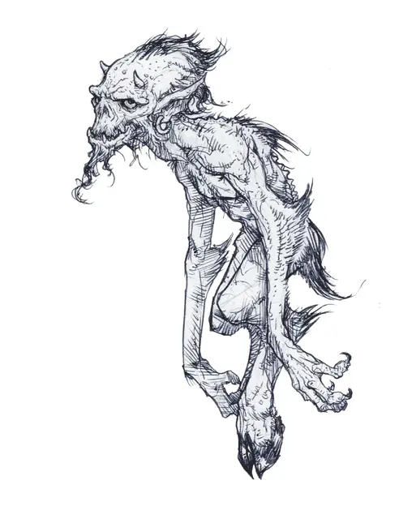

Истерзанный
Forlarren
Средняя Фея, хаотично-нейтральная

Класс Доспеха 16 (природный доспех)
Хиты 33 (6к4 + 18)
Скорость 40 футов
| мод | спас | ||
|---|---|---|---|
| СИЛ | 14 | +2 | +2 |
| ЛОВ | 16 | +3 | +3 |
| ТЕЛ | 17 | +3 | +3 |
| мод | спас | ||
|---|---|---|---|
| ИНТ | 12 | +1 | +1 |
| МДР | 11 | +0 | +0 |
| ХАР | 18 | +4 | +4 |
Навыки Акробатика +5, Обман +8, Скрытность +5
Чувства тёмное зрение 30 футов, пассивное Восприятие 10
Языки Общий, Сильван
Опасность 3 (700 опыта)
Бонус мастерства +2
Особенности
Сопротивление магии. Истерзанный совершает с преимуществом спасброски против заклинаний и прочих магических эффектов.
Врождённое колдовство. Базовой характеристикой монстра является харизма (Сл спасброска от заклинания 14). Он может накладывать следующие заклинания, не нуждаясь в материальных компонентах:
• Неограниченно: поспешное отступление [expeditious retreat], псевдожизнь [false life], малая иллюзия [minor illusion], фокусы [prestidigitation]
• 3/день каждое: подмога [aid], туманный шаг [misty step], жуткий смех Таши [tasha's hideous laughter]
• 1/день каждое: полное исцеление [heal], раскалённый металл [heat metal], отражения [mirror image]
Действия
Мультиатака. Истерзанный совершает две атаки Когтем и одну атаку Пронзанием, или три атаки Цветным лучом.
Коготь. Рукопашная атака оружием: +5 к попаданию, дистанция 5 фт., одна цель. Попадание: 6 (1к6+3) рубящего урона.
Пронзание. Рукопашная атака оружием: +5 к попаданию, дистанция 5 фт., одна цель. Попадание: 7 (1к8+3) колющего урона.
Цветной луч. Дальнобойная атака заклинанием: +6 к попаданию, дистанция 60 фт., одна цель. Попадание: 3 (1к6) урона электричеством, 3 (1к6) урона огнём и 3 (1к6) урона холодом.
Описание
Потомки сатиров, сломленные инфернальными силами, истерзанные это жалкие существа – несчастный союз между жёсткими требованиями Девяти Преисподних и импульсивным гедонизмом Страны Фей. Движимые горькими и непредсказуемыми эмоциями, эти озверевшие существа несут хаос, куда бы они ни направились.
Извращённая сущность. В давние времена, дьяволы Авернуса организовали экспедицию в Страну Фей, и истерзанные служат горьким напоминанием о той обречённой миссии. Архидьявол Фьёрна, соправительница Флегетоса, четвёртого уровня Девяти Преисподних, ухаживала за могучей феей, в надежде подвести её к сделке за её душу. Попытка провалилась, но незадолго до того, отряд сатиров был совращён тёмными наслаждениями Флегетоса. Сатиры были связаны со своей госпожой, а потому неспособны продать свои души. И вместо того чтобы подчинить их, Фьёрна извратила и исказила их, прежде чем вернуть в Страну Фей, удовлетворённая тем, что совращение сатиров станет адекватной компенсацией за её собственный провал.
Раздвоенные души. Противоречивая природа истерзанных отражает их происхождение, демонстрируя, что каждый из них – это две сущности, заключённые в едином теле. Один истерзанный может представляться дружелюбным, охотным гидом, помогающим путникам выжить в Девяти Преисподних. Другой же – воющая тварь, стремящаяся разрушить всё на своём пути. Один выразит жалость и эмпатию, приправленные родительской заботой по отношению к незнакомцам. Другой – радостный сибарит с безграничной любовью к еде, алкоголю, и плотским утехам. Когда вы имеете дело с истерзанными, единственной постоянной чертой остаётся податливая, хаотичная, и темпераментая природа, общая для них всех.
Когда начинает проглядываться его дьявольская сторона, истерзанный становится хитроумным, расчётливым, и жестоким врагом. Он может использовать свой врождённый шарм, чтобы вклиниться в доверие к тем кого он встречает, изображая себя беспомощным существом, молящим о помощи, в этот же момент выискивая шанс предать и подчинить. Или же он может сделать своей целью стать мелким местным лордом, правя теми кто угодит в его хватку, и помыкая слабыми.
Зловещий цикл. Истерзанный в своей фейской доле демонстрирует саморазрушительные позывы, отражающие унаследованный конфликт в его природе. Этот аспект может заставить его упиться чуть ли не до смерти, или отдаться заботе о других с таким неутолимым рвением, что со временем он просто упадёт от истощения. К несчастью, достигая этой переломной точки, его дьявольская природа утверждает себя, и он остаётся в этом коварном, жестоко амбициозном образе мыслей до тех пор, пока все его планы не потерпят крах, а сам он не будет вынужден признать поражение. Затем, переполненная страхом и стыдом, дьявольская сторона его разума утихает, и вновь уступает место природе феи.
Несколько баллад Страны Фей пересказывают трагичное падение храбрых истерзанных. Во всех этих сказаниях, герой совершает некий великий подвиг, лишь для того, чтобы узреть, как их тёмная сущность укрепляется в разуме. Сбивая своих товарищей с пути во времена их самых тяжких испытаний, истерзанный затем предаёт их в худший момент из возможных.